Mina de São Domingos - Mertola - Portugal
|
Aguas contaminadas ! |
|
|
a) A l'Age du cuivre a) Le paysage et la végétation |
|
BONNE LECTURE !
Pour lire cet exposé en anglais, cliquez sur ce drapeau :
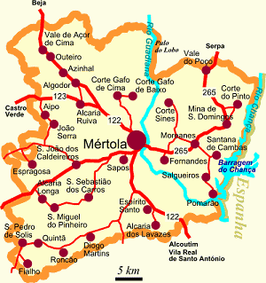La mine de São Domingos est située à 17 kilomètres du village de Mertola, dans la région de l'Alentejo au sud du Portugal, au cæur de la ceinture ibérienne de pyrite. Le climat est méditérranéen avec des longs étés très chauds et des hivers courts.
Géologiquement, le sol de la région est composé de schiste, un mélange de roches volcaniques et sédimentaires.
La mine a été exploitée depuis l'époque chalcolithique (c'est l'Age du cuivre), il y a plus de 4000 ans. Malheureusement, elle est abandonnée depuis 1966 car les réserves de cuivre sont épuisées.
Depuis, cela a provoqué une pollution de la végétation et surtout de l'eau ( aguas contaminadas ) qui menace les hommes et les animaux de toute la région.
a) A l'Age du cuivre
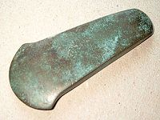Des fouilles archéologiques ont permis de trouver des outils protohistoriques de l'Age du cuivre (photo n° 1) qui prouvent que dès cette époque on a extrait du minerai. Ces travaux d'extraction sont attribués aux Carthaginois et aux Phéniciens.
b) Au temps des Romains
La deuxième période d'extraction est attribuée aux Romains qui ont intensifié la production de cuivre à grande échelle. Au départ, la raison principale de la présence des Romains dans cette région désertique n'était pas le cuivre mais l'or et l'argent.
Les activités d'extraction ont duré 385 ans, de 12 à 397 après J.-C. L'exploitation a eu lieu jusqu'à une profondeur de 40 mètres. En se basant sur la quantité de scories retrouvées, on a calculé que les Romains ont extrait 750.000 Tonnes de pyrite et de minerai de cuivre pendant cette période.
c) À partir du XIXème siècle
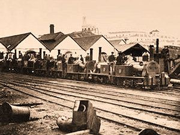La troisième et dernière période d'extraction intensive de minerai commence en 1855. Cette année-là, la Sabina Mining Company obtient une concession d'exploitation de 800 km². Pour des raisons économiques, elle se termine en 1966 par la fermeture de la mine car toutes les réserves exploitables de cuivre sont épuisées.
Pendant cette période, la mine a été exploitée 24h sur 24 par des milliers d'ouvriers. L'extraction se faisait dans des mines souterraines et des mines à ciel ouvert.
Les premières années, le minerai était ramené à la surface par des ânes, il fut ensuite transporté par des wagonnets (photo n° 2).
Dès 1858, on a extrait 236 Tonnes de pyrite sulfureux. En 1862, 120.000 Tonnes de pyrite sont exportés vers l'Angleterre, ce qui représente près de la moitié de la consommation de ce pays. L'année 1919 est l'année record de toute l'histoire de la mine de São Domingos, cette année-là, 432.350 Tonnes de minerai ont été extraits. Enfin, en 1965, la dernière année complète d'exploitation avant la fermeture de 1966, 66.823 Tonnes de minerai ont encore été enlevés. En tout, de 1855 à 1966, c'est plus de 25 millions de Tonnes de minerai qui ont été retirés du sol de la région de São Domingos.
a) Le paysage et la végétation
Comme nous l'avons dit, deux types d'extraction ont été utilisés dans la mine de São Domingos : souterrain et à ciel ouvert. Le premier a provoqué la création d'un système très complexe de galeries séparées d'environ 30 mètres par des passages amenagés et d'une profondeur pouvant aller jusqu'à 400 mètres. Le deuxième, qui dura une cinquantaine d'années à la fin du XIXème siècle, a provoqué le déplacement de plus de 3 millions de mètres cubes de terre, dans un secteur d'environ 42.000 m² et jusqu'à une profondeur de 100 mètres.
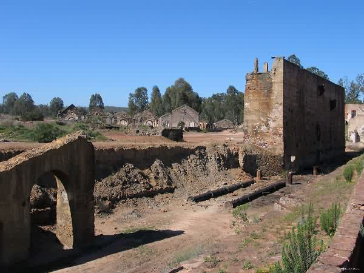
Depuis 1966, tout a été laissé à l'abandon et les batiments sont en ruine (photo n° 3). Les nombreuses vieilles infrastructures sont entourées par plusieurs décharges à scories sauvages. Les déchets de mine sont estimés à plusieurs centaines de milliers de Tonnes. Elles contiennent des restes de minerai, des débris de construction, et surtout, des sédiments dérivant de l'écoulement sur ces matériaux. En raison de la grande concentration de minerai, on y trouve des cristaux de soufre et divers sulfates, dont la mélantérite et la jarosite.
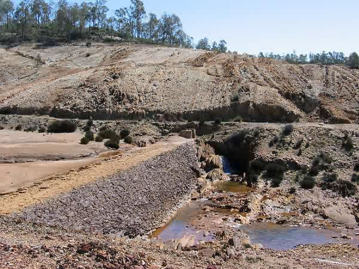
Cette situation est préoccupante car elle crée de sérieux problèmes d'environnement, non seulement pour le paysage et la végétation (photo n° 4) mais aussi pour tous les écosystèmes de la région.
b) Le problème de l'eau
Pendant l'exploitation de la mine, des lagunes (photo n° 5) ont été crées pour permettre la décantation des scories retirées de la mine.
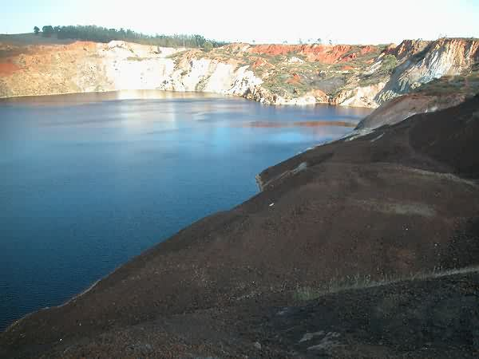
Depuis la fermeture de la mine, l'eau de ces lagunes est devenue très acide, avec un pH égal à 2.4. Ces eaux acides qui ont une très forte concentration d'oxydes sont très polluées (photos n° 6 et n° 7). Elles sont très nocives pour la terre, bien sûr, mais le plus dangereux est qu'elles se mélangent aux eaux retenues par le barrage de la rivière Chança tout proche. Il faut signaler que l'eau de ce barrage sert pour l'irrigation et la consommation ! A cause de ces infiltrations, elles sont devenues très dangereuses pour les animaux et les hommes.
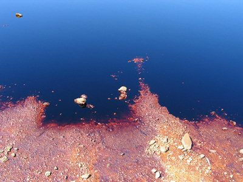 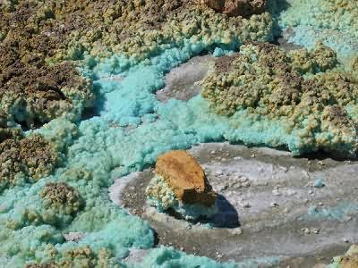
Depuis 2000, l'association de défense du patrimoine de Mértola et le conseil municipal de Mértola ont fait des analyses du sol et de l'eau pour alerter le gouvernement portugais des dangers de la pollution. Des projets de réhabilitation de la mine de São Domingos ont déjà commencé (photo n° 8) et des travaux de nettoyage sont prévus dans les années à venir pour dépolluer la région et protéger son environnement.
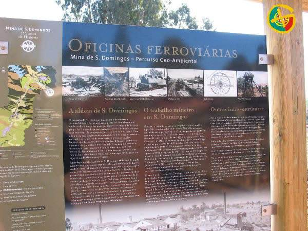
Voici des photos de la mine de São Domingos prises pendant le voyage d'études au Portugal, en octobre 2005.:
|
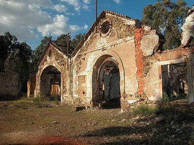 |
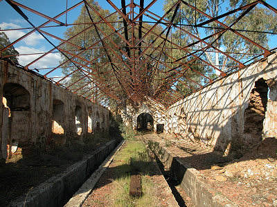 |
|
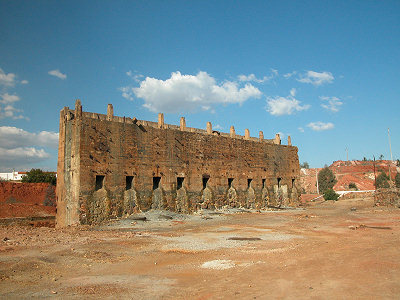 |
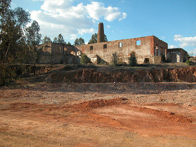 |
|
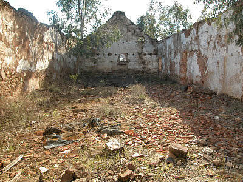 |
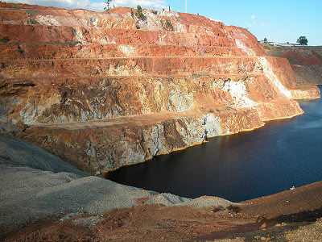 |
Exposé effectué pour le cours de biologie de Mme Lecointre par des élèves du collège d'Alco :
Maïté è classe de 4ème E
Katell è classe de 4èmeE
Page web réalisée par les élèves avec l'aide de M. Martinet, professeur de mathématiques.
Il y a déjà eu visiteurs sur cette page. Merci beaucoup !!!